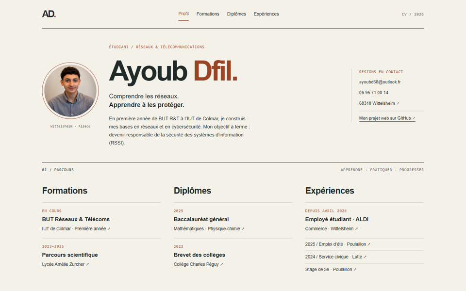

En cours
BUT Réseaux & Télécommunications
IUT de Colmar · Première année
Construire des bases solides
Ma formation me permet de découvrir le fonctionnement des réseaux, des systèmes et des services de communication. Je m’intéresse particulièrement à la sécurité des systèmes d’information.
- Réseaux : adressage, principes du routage et communication entre équipements.
- Systèmes : configuration des postes et découverte de l’administration.
- Web : structuration des pages en HTML et mise en forme en CSS.
Le BUT est en préparation : il ne figure pas parmi mes diplômes obtenus.
Site de l’IUT de Colmar ↗2023–2025
Parcours au lycée
Lycée Amélie Zurcher · Wittelsheim
Une approche scientifique
En première, j’ai suivi les spécialités sciences économiques et sociales, mathématiques et physique-chimie. En terminale, j’ai conservé les mathématiques et la physique-chimie, avec l’option mathématiques expertes.
- Mathématiques : raisonnement logique et résolution de problèmes.
- Physique-chimie : rigueur expérimentale et analyse de phénomènes.
- Mathématiques expertes : approfondissement des outils mathématiques.
SAÉ 1.04 / 2026–2027
Un CV sur le web
HTML5 · CSS3 · GitHub
Se présenter sur Internet


Ce projet consiste à organiser mon parcours dans un site de quatre pages, reliées par des liens et des ancres. Une seule feuille CSS assure la cohérence graphique de l’ensemble.
- Une structure HTML sémantique : navigation, en-tête, contenu et pied de page.
- Une mise en page avec Flexbox et Grid, adaptée aux petits écrans.
- Un résumé en anglais et une documentation du projet sur GitHub.
La refonte reprend le contenu de mon premier CV, corrige sa structure et ajoute mon expérience chez ALDI. Le site fonctionne entièrement sans JavaScript.
Lire la description détaillée sur GitHub ↗